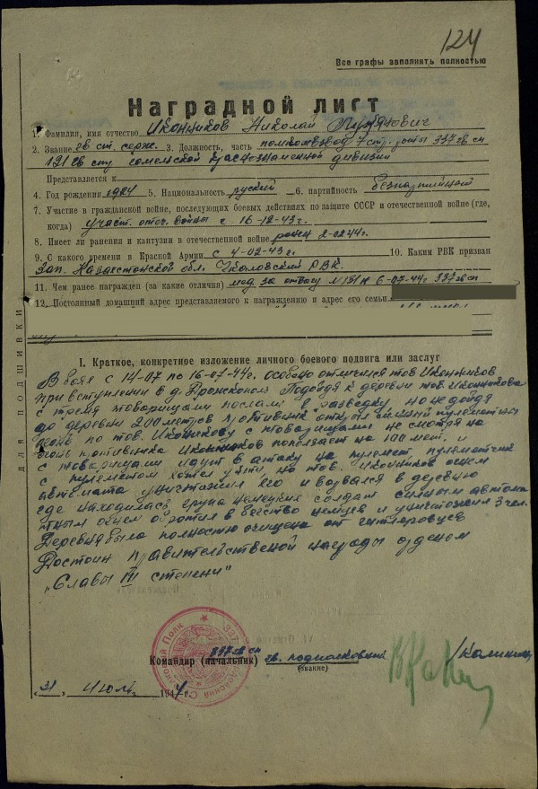

Я отношусь к тому поколению, которое о войне уже мало что знает. В школе конечно учили основные даты, цифры потерь, Т-34 и «Катюшу». Отличники даже знали что Вторая мировая война и Великая Отечественная это не одно и то же. А вот с непосредственными участниками говорить как-то было не принято.
Непосредственных участников в моей семье было три — два деда и одна бабушка. Ну деды-то само собой, а бабушка, мне казалось, была медсестрой, ну или радисткой. Я даже помню спрашивал у неё, кем конкретно, а что она ответила я не помню…
С войны все вернулись живыми, пахали землю, растили моих родителей, воспитывали меня, ушли…
Ужас войны, её дыхание, страх, с которым приходилось бороться, ненависть и, порой бессилие я стал понимать уже будучи сильно взрослым — в школе учат цифрам, но не учат страху. И я не уверен, что смог бы.
А вот деды и бабушка, смогли.
Пару месяцев назад наткнулся в интернете на сайт «Подвиг народа». Если вы до сих пор не натыкались, наткнитесь сейчас. Создатели сайта сканируют и выкладывают в общий доступ информацию о награждениях участников Великой Отечественной. Конечно, ордена и медали я видел и раньше, но кроме самих наград, на сайте есть информация о подвиге.

В боях с 14-07 по 16-07-44 г. особенно отличился тов Иконников при вступлении в д. Дронскополь Подойдя к деревни тов. Иконникова с тремя товарищами послали в разведку, но не дойдя до деревни 200 метров противник открыл сильный пулеметный огонь по тов. Иконникову с товарищами несмотря на огонь противника Иконников поползает на 100 мет, и с товарищами идут в атаку на пулемет, пулеметчик с пулеметом хотел уйти, но тов. Иконников огнем автомата уничтожил его и ворвался в деревню где находилась группа немецких солдат сильным автоматным огнем обротил в бегство немцев и уничтожил 3 чел. Деревня была полностью вычищена от гитлеровцев. Достоин правительственной награды орденом «Славы III степени»
Помню и горжусь.